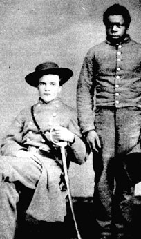

|

NAME: John Wallace Comer
BORN: 1845
DIED: 1919
ALLEGIANCE: Confederate
HIGHEST RANK: Captain
UNIT: 57th Alabama Infantry
RECORD: Enlisted as 1st sergeant on April 1, 1863. Commissioned
second lieutenant (date unknown). Appointed captain in the
spring of 1865, Surrendered at Durham Station, North
Carolina, on April 26.
|
|
John Wallace Comer was born into an old, aristocratic
Southern family at Spring Hill, Alabama, on June 13, 1845.
He grew up on a 30,000-acre cotton plantation owned by his
parents and worked by 350 slaves.
Comer was just 16 years old at the outbreak of the Civil
War and did not enlist until two years later, in April 1863,
when he joined the 57th Alabama Infantry. He served with
that regiment on various postings in the Deep South during
the years that followed, eventually joining the Army of
Tennessee in time to take part in defending Atlanta,
Georgia, from Union invaders.
During one of the battles near Atlanta, Comer was
wounded. He was carried from the battlefield by his body
servant, Burrell, who posed with his master for this photo
and stayed by his side during his service to the
Confederacy. Burrell put the wounded Comer in a bateau and
rowed him down the Chattahoochee River to Columbus, Georgia,
far from the flying bullets. There Comer recovered at the
home of his cousins and then rejoined the army.
The 57th took part in the March 1865 Battle of
Bentonville, North Carolina, and then surrendered with the
rest of the Army of Tennessee in April. Comer's record shows
he surrendered with his command. He had been appointed
captain shortly before the surrender, but too late to
actually receive his commission. He was the last surviving
officer in his company.
After the war, during the election of 1874, Comer and two
of his brothers, Braxton and John, helped organize a riot
aimed at preventing black citizens from voting. Willie
Keils, son of Republican leader and federal judge Elias M.
Keils, was killed in the riot. The judge himself was saved
only because he showed a Masonic sign to Comer, who was also
a Freemason. Comer was shot in the leg defending Keils.
Suspected instigators of the riot were indicted, but if
Comer served a jail sentence, it was not a long one. He went
on to operate a plantation in Barbour County and enter into
a number of other business ventures with members of his
family. He died in Savannah, Georgia, on September 20, 1919,
and was buried in Fairview Cemetery in Eufaula.
Source: Civil War Times Illustrated
35:4 (August 1996), 80.
|